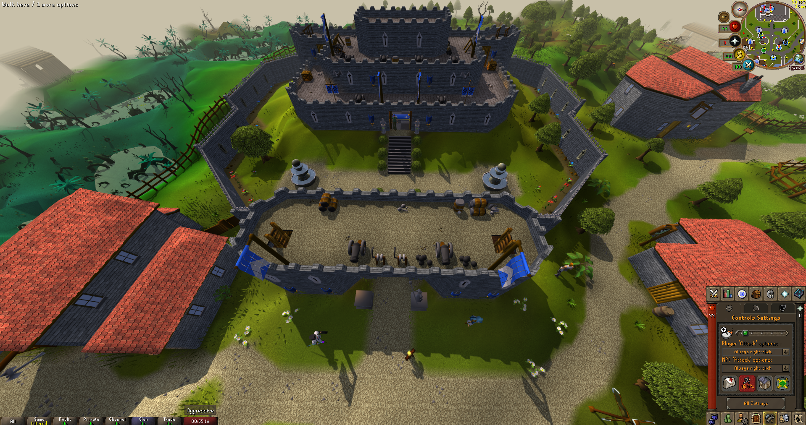

yellow:What the heck is OSRS?
white:Old School RuneScape is a massively multiplayer online role-playing game (MMORPG) developed and published by Jagex. The game was released on 22 February 2013. When Old School RuneScape launched, it was originally an August 2007 version of RuneScape, which was highly popular prior to the launch of RuneScape 3.
The game has since received engine improvements, new content, and quality of life updates largely decided by in-game polls. Despite having a smaller development team and a slower relative update schedule, Old School RuneScape has a larger player-base than RuneScape. A mobile version for Android and iOS was released in October 2018.

×

glow1:wave:OSRS Lumbridge